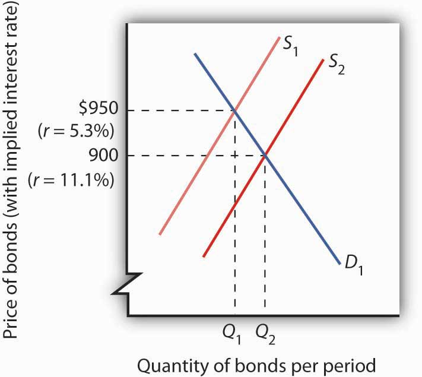
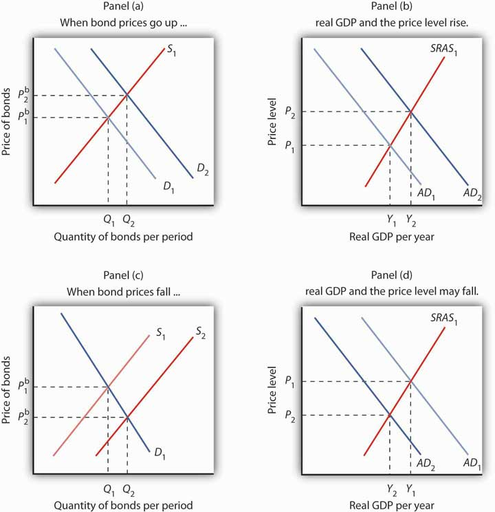
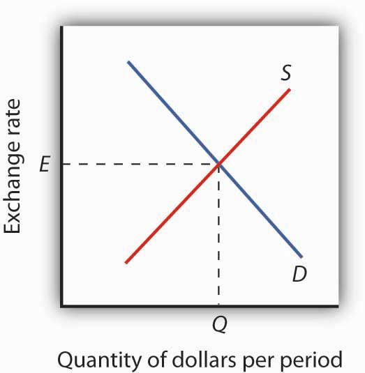
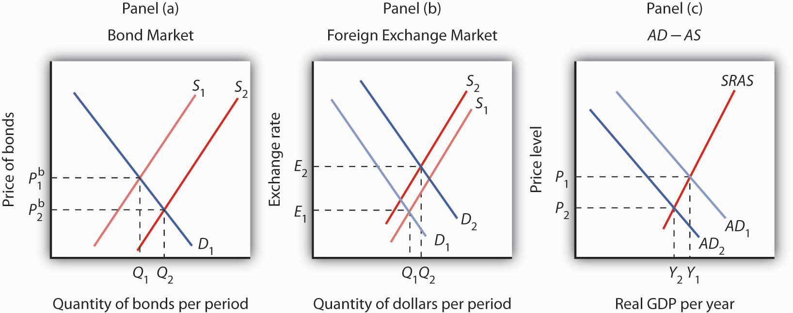

In this section, we will look at the bond market and at the market for foreign exchange. Events in these markets can affect the price level and output for the entire economy.
In their daily operations and in pursuit of new projects, institutions such as firms and governments often borrow. They may seek funds from a bank. Many institutions, however, obtain credit by selling bonds. The federal government is one institution that issues bonds. A local school district might sell bonds to finance the construction of a new school. Your college or university has probably sold bonds to finance new buildings on campus. Firms often sell bonds to finance expansion. The market for bonds is an enormously important one.
When an institution sells a bond, it obtains the price paid for the bond as a kind of loan. The institution that issues the bond is obligated to make payments on the bond in the future. The interest rate is determined by the price of the bond. To understand these relationships, let us look more closely at bond prices and interest rates.
Suppose the manager of a manufacturing company needs to borrow some money to expand the factory. The manager could do so in the following way: he or she prints, say, 500 pieces of paper, each bearing the company’s promise to pay the bearer $1,000 in a year. These pieces of paper are bonds, and the company, as the issuer, promises to make a single payment. The manager then offers these bonds for sale, announcing that they will be sold to the buyers who offer the highest prices. Suppose the highest price offered is $950, and all the bonds are sold at that price. Each bond is, in effect, an obligation to repay buyers $1,000. The buyers of the bonds are being paid $50 for the service of lending $950 for a year.
The $1,000 printed on each bond is the face value of the bondThe amount the issuer of a bond will have to pay on the maturity date.; it is the amount the issuer will have to pay on the maturity dateThe date when a bond matures, or comes due. of the bond—the date when the loan matures, or comes due. The $950 at which they were sold is their price. The difference between the face value and the price is the amount paid for the use of the money obtained from selling the bond.
An interest ratePayment made for the use of money, expressed as a percentage of the amount borrowed. is the payment made for the use of money, expressed as a percentage of the amount borrowed. Bonds you sold command an interest rate equal to the difference between the face value and the bond price, divided by the bond price, and then multiplied by 100 to form a percentage:
Equation 25.1
At a price of $950, the interest rate is 5.3%
The interest rate on any bond is determined by its price. As the price falls, the interest rate rises. Suppose, for example, that the best price the manager can get for the bonds is $900. Now the interest rate is 11.1%. A price of $800 would mean an interest rate of 25%; $750 would mean an interest rate of 33.3%; a price of $500 translates into an interest rate of 100%. The lower the price of a bond relative to its face value, the higher the interest rate.
Bonds in the real world are more complicated than the piece of paper in our example, but their structure is basically the same. They have a face value (usually an amount between $1,000 and $100,000) and a maturity date. The maturity date might be three months from the date of issue; it might be 30 years.
Whatever the period until it matures, and whatever the face value of the bond may be, its issuer will attempt to sell the bond at the highest possible price. Buyers of bonds will seek the lowest prices they can obtain. Newly issued bonds are generally sold in auctions. Potential buyers bid for the bonds, which are sold to the highest bidders. The lower the price of the bond relative to its face value, the higher the interest rate.
Both private firms and government entities issue bonds as a way of raising funds. The original buyer need not hold the bond until maturity. Bonds can be resold at any time, but the price the bond will fetch at the time of resale will vary depending on conditions in the economy and the financial markets.
Figure 25.1 "The Bond Market" illustrates the market for bonds. Their price is determined by demand and supply. Buyers of newly issued bonds are, in effect, lenders. Sellers of newly issued bonds are borrowers—recall that corporations, the federal government, and other institutions sell bonds when they want to borrow money. Once a newly issued bond has been sold, its owner can resell it; a bond may change hands several times before it matures.
Figure 25.1 The Bond Market
The equilibrium price for bonds is determined where the demand and supply curves intersect. The initial solution here is a price of $950, implying an interest rate of 5.3%. An increase in borrowing, all other things equal, increases the supply of bonds to S2 and forces the price of bonds down to $900. The interest rate rises to 11.1%.
Bonds are not exactly the same sort of product as, say, broccoli or some other good or service. Can we expect bonds to have the same kind of downward-sloping demand curves and upward-sloping supply curves we encounter for ordinary goods and services? Yes. Consider demand. At lower prices, bonds pay higher interest. That makes them more attractive to buyers of bonds and thus increases the quantity demanded. On the other hand, lower prices mean higher costs to borrowers—suppliers of bonds—and should reduce the quantity supplied. Thus, the negative relationship between price and quantity demanded and the positive relationship between price and quantity supplied suggested by conventional demand and supply curves holds true in the market for bonds.
If the quantity of bonds demanded is not equal to the quantity of bonds supplied, the price will adjust almost instantaneously to balance the two. Bond prices are perfectly flexible in that they change immediately to balance demand and supply. Suppose, for example, that the initial price of bonds is $950, as shown by the intersection of the demand and supply curves in Figure 25.1 "The Bond Market". We will assume that all bonds have equal risk and a face value of $1,000 and that they mature in one year. Now suppose that borrowers increase their borrowing by offering to sell more bonds at every interest rate. This increases the supply of bonds: the supply curve shifts to the right from S1 to S2. That, in turn, lowers the equilibrium price of bonds—to $900 in Figure 25.1 "The Bond Market". The lower price for bonds means a higher interest rate.
The connection between the bond market and the economy derives from the way interest rates affect aggregate demand. For example, investment is one component of aggregate demand, and interest rates affect investment. Firms are less likely to acquire new capital (that is, plant and equipment) if interest rates are high; they’re more likely to add capital if interest rates are low.Consumption may also be affected by changes in interest rates. For example, if interest rates fall, consumers can more easily obtain credit and thus are more likely to purchase cars and other durable goods. To simplify, we ignore this effect.
If bond prices fall, interest rates go up. Higher interest rates tend to discourage investment, so aggregate demand will fall. A fall in aggregate demand, other things unchanged, will mean fewer jobs and less total output than would have been the case with lower rates of interest. In contrast, an increase in the price of bonds lowers interest rates and makes investment in new capital more attractive. That change may boost investment and thus boost aggregate demand.
Figure 25.2 "Bond Prices and Macroeconomic Activity" shows how an event in the bond market can stimulate changes in the economy’s output and price level. In Panel (a), an increase in demand for bonds raises bond prices. Interest rates thus fall. Lower interest rates increase the quantity of investment demanded, shifting the aggregate demand curve to the right, from AD1 to AD2 in Panel (b). Real GDP rises from Y1 to Y2; the price level rises from P1 to P2. In Panel (c), an increase in the supply of bonds pushes bond prices down. Interest rates rise. The quantity of investment is likely to fall, shifting aggregate demand to the left, from AD1 to AD2 in Panel (d). Output and the price level fall from Y1 to Y2 and from P1 to P2, respectively. Assuming other determinants of aggregate demand remain unchanged, higher interest rates will tend to reduce aggregate demand and lower interest rates will tend to increase aggregate demand.
Figure 25.2 Bond Prices and Macroeconomic Activity
An increase in the demand for bonds to D2 in Panel (a) raises the price of bonds to Pb2, which lowers interest rates and boosts investment. That increases aggregate demand to AD2 in Panel (b); real GDP rises to Y2 and the price level rises to P2.
An increase in the supply of bonds to S2 lowers bond prices to Pb2 in Panel (c) and raises interest rates. The higher interest rate, taken by itself, is likely to cause a reduction in investment and aggregate demand. AD1 falls to AD2, real GDP falls to Y2, and the price level falls to P2 in Panel (d).
In thinking about the impact of changes in interest rates on aggregate demand, we must remember that some events that change aggregate demand can affect interest rates. We will examine those events in subsequent chapters. Our focus in this chapter is on the way in which events that originate in financial markets affect aggregate demand.
Another financial market that influences macroeconomic variables is the foreign exchange marketA market in which currencies of different countries are traded for one another., a market in which currencies of different countries are traded for one another. Since changes in exports and imports affect aggregate demand and thus real GDP and the price level, the market in which currencies are traded has tremendous importance in the economy.
Foreigners who want to purchase goods and services or assets in the United States must typically pay for them with dollars. United States purchasers of foreign goods must generally make the purchase in a foreign currency. An Egyptian family, for example, exchanges Egyptian pounds for dollars in order to pay for admission to Disney World. A German financial investor purchases dollars to buy U.S. government bonds. A family from the United States visiting India, on the other hand, needs to obtain Indian rupees in order to make purchases there. A U.S. bank wanting to purchase assets in Mexico City first purchases pesos. These transactions are accomplished in the foreign exchange market.
The foreign exchange market is not a single location in which currencies are traded. The term refers instead to the entire array of institutions through which people buy and sell currencies. It includes a hotel desk clerk who provides currency exchange as a service to hotel guests, brokers who arrange currency exchanges worth billions of dollars, and governments and central banks that exchange currencies. Major currency dealers are linked by computers so that they can track currency exchanges all over the world.
A country’s exchange rate is the price of its currency in terms of another currency or currencies. On December 12, 2008, for example, the dollar traded for 91.13 Japanese yen, 0.75 euros, 10.11 South African rands, and 13.51 Mexican pesos. There are as many exchange rates for the dollar as there are countries whose currencies exchange for the dollar—roughly 200 of them.
Economists summarize the movement of exchange rates with a trade-weighted exchange rateAn index of exchange rates., which is an index of exchange rates. To calculate a trade-weighted exchange rate index for the U.S. dollar, we select a group of countries, weight the price of the dollar in each country’s currency by the amount of trade between that country and the United States, and then report the price of the dollar based on that trade-weighted average. Because trade-weighted exchange rates are so widely used in reporting currency values, they are often referred to as exchange rates themselves. We will follow that convention in this text.
The rates at which most currencies exchange for one another are determined by demand and supply. How does the model of demand and supply operate in the foreign exchange market?
The demand curve for dollars relates the number of dollars buyers want to buy in any period to the exchange rate. An increase in the exchange rate means it takes more foreign currency to buy a dollar. A higher exchange rate, in turn, makes U.S. goods and services more expensive for foreign buyers and reduces the quantity they will demand. That is likely to reduce the quantity of dollars they demand. Foreigners thus will demand fewer dollars as the price of the dollar—the exchange rate—rises. Consequently, the demand curve for dollars is downward sloping, as in Figure 25.3 "Determining an Exchange Rate".
Figure 25.3 Determining an Exchange Rate
The equilibrium exchange rate is the rate at which the quantity of dollars demanded equals the quantity supplied. Here, equilibrium occurs at exchange rate E, at which Q dollars are exchanged per period.
The supply curve for dollars emerges from a similar process. When people and firms in the United States purchase goods, services, or assets in foreign countries, they must purchase the currency of those countries first. They supply dollars in exchange for foreign currency. The supply of dollars on the foreign exchange market thus reflects the degree to which people in the United States are buying foreign money at various exchange rates. A higher exchange rate means that a dollar trades for more foreign currency. In effect, the higher rate makes foreign goods and services cheaper to U.S. buyers, so U.S. consumers will purchase more foreign goods and services. People will thus supply more dollars at a higher exchange rate; we expect the supply curve for dollars to be upward sloping, as suggested in Figure 25.3 "Determining an Exchange Rate".
In addition to private individuals and firms that participate in the foreign exchange market, most governments participate as well. A government might seek to lower its exchange rate by selling its currency; it might seek to raise the rate by buying its currency. Although governments often participate in foreign exchange markets, they generally represent a very small share of these markets. The most important traders are private buyers and sellers of currencies.
People purchase a country’s currency for two quite different reasons: to purchase goods or services in that country, or to purchase the assets of that country—its money, its capital, its stocks, its bonds, or its real estate. Both of these motives must be considered to understand why demand and supply in the foreign exchange market may change.
One thing that can cause the price of the dollar to rise, for example, is a reduction in bond prices in American markets. Figure 25.4 "Shifts in Demand and Supply for Dollars on the Foreign Exchange Market" illustrates the effect of this change. Suppose the supply of bonds in the U.S. bond market increases from S1 to S2 in Panel (a). Bond prices will drop. Lower bond prices mean higher interest rates. Foreign financial investors, attracted by the opportunity to earn higher returns in the United States, will increase their demand for dollars on the foreign exchange market in order to purchase U.S. bonds. Panel (b) shows that the demand curve for dollars shifts from D1 to D2. Simultaneously, U.S. financial investors, attracted by the higher interest rates at home, become less likely to make financial investments abroad and thus supply fewer dollars to exchange markets. The fall in the price of U.S. bonds shifts the supply curve for dollars on the foreign exchange market from S1 to S2, and the exchange rate rises from E1 to E2.
Figure 25.4 Shifts in Demand and Supply for Dollars on the Foreign Exchange Market
In Panel (a), an increase in the supply of bonds lowers bond prices to Pb2 (and thus raises interest rates). Higher interest rates boost the demand and reduce the supply for dollars, increasing the exchange rate in Panel (b) to E2. These developments in the bond and foreign exchange markets are likely to lead to a reduction in net exports and in investment, reducing aggregate demand from AD1 to AD2 in Panel (c). The price level in the economy falls to P2, and real GDP falls from Y1 to Y2.
The higher exchange rate makes U.S. goods and services more expensive to foreigners, so it reduces exports. It makes foreign goods cheaper for U.S. buyers, so it increases imports. Net exports thus fall, reducing aggregate demand. Panel (c) shows that output falls from Y1 to Y2; the price level falls from P1 to P2. This development in the foreign exchange market reinforces the impact of higher interest rates we observed in Figure 25.2 "Bond Prices and Macroeconomic Activity", Panels (c) and (d). They not only reduce investment—they reduce net exports as well.
Suppose the supply of bonds in the U.S. market decreases. Show and explain the effects on the bond and foreign exchange markets. Use the aggregate demand/aggregate supply framework to show and explain the effects on investment, net exports, real GDP, and the price level.
In October 2011, bond fund manager Bill Gross sent out an extraordinary open letter titled “Mea Culpa.” He was taking the blame for the poor performance of Pimco Total Return Bond Fund, the huge fund he manages. After years of stellar performance, what had gone wrong?
Earlier in 2011, Mr. Gross announced that he would avoid U.S. Treasury bonds. He assumed that as the U.S. and other countries’ economies recovered, interest rates would begin to rise and, hence, U.S. bond prices would fall. When Mr. Gross pulled out of U.S. Treasuries, he used some of the cash to buy other types of debt, such as that of emerging markets. He also held onto some cash. He warned others to shun Treasuries as well.
However, as the financial situation in Europe weakened over worries about government debt in various European countries—starting with Greece and then spilling over to Portugal, Spain, Italy, and others—investors around the world flocked toward Treasuries, pushing Treasury bond prices up. It was a rally that Mr. Gross’s customers missed.
From where did the financial investors get the funds to buy Treasuries? In part, these funds were obtained from some of the same types of bonds that were then in the Pimco fund portfolio. As a result, the prices of bonds in the Pimco fund fell.
In the letter, Mr. Gross wrote, “The simple fact is that the portfolio at midyear was positioned for what we call a ‘New Normal’ developed world economy—2% real growth and 2% inflation. When growth estimates quickly changed it was obvious that I had misjudged the fly ball: E-CF or for nonbaseball aficionados—error centerfield.” In the fall of 2011, he shifted gears and began buying U.S. Treasuries, assuming that a weak global economy would keep interest rates low. He was foiled again, as interest rates started to rise a bit.
In the end, 2011 turned out to be a bad year for the fund, ranking poorly compared to its peers. But after many successful years, it retained its five-star rating by Morningstar in 2012. We must wait to see whether Mr. Gross will get his groove back. In the letter, he concluded, “There is no ‘quit’ in me or anyone else on the Pimco premises. The early morning and even midnight hours have gone up, not down, to match the increasing complexity of the global financial markets. The competitive fire burns even hotter. I/we respect our competition but we want to squash them each and every day…”
Source: “Bill Gross Apologizes to Pimco Fund Owners for ‘Bad Year,’” Los Angeles Times, October 14, 2011, online version.
If the supply of bonds decreases from S1 to S2, bond prices will rise from Pb1 to Pb2, as shown in Panel (a). Higher bond prices mean lower interest rates. Lower interest rates in the United States will make financial investments in the United States less attractive to foreigners. As a result, their demand for dollars will decrease from D1 to D2, as shown in Panel (b). Similarly, U.S. financial investors will look abroad for higher returns and thus supply more dollars to foreign exchange markets, shifting the supply curve from S1 to S2. Thus, the exchange rate will decrease. The quantity of investment rises due to the lower interest rates. Net exports rise because the lower exchange rate makes U.S. goods and services more attractive to foreigners, thus increasing exports, and makes foreign goods less attractive to U.S. buyers, thus reducing imports. Increases in investment and net exports imply a rightward shift in the aggregate demand curve from AD1 to AD2. Real GDP and the price level increase.